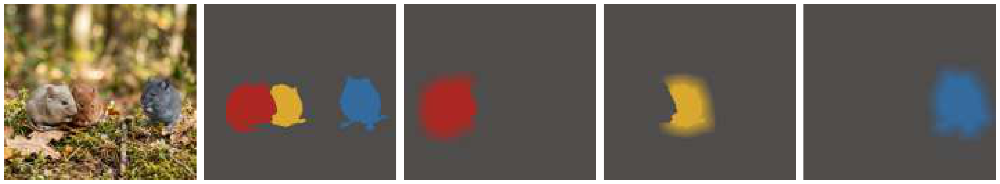
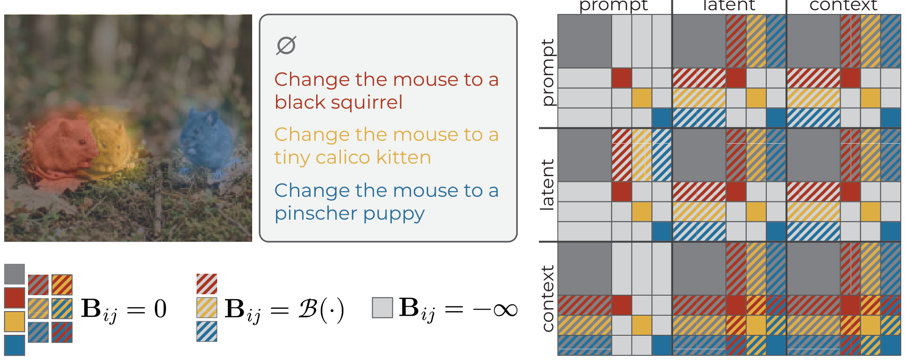
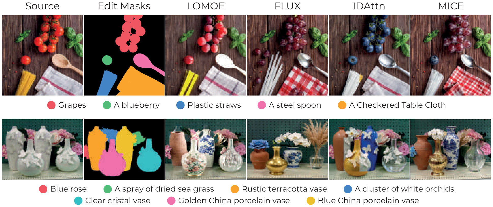

MICE
Editing Everything Everywhere All at Once
Multi-Instance Concurrent Editing
Abstract
Editing multiple elements of an image in a single forward pass is a practical alternative to multi-turn image manipulation, offering improved efficiency and potentially better harmonization. However, when several instructions target different regions, semantic interference often leads to attribute leakage and poor edit disentanglement, especially as the number of edits increases.
In this work, we propose MICE (Multi-Instance Concurrent Editing), a training-free strategy for scalable multi-instance image editing with Multimodal Diffusion Transformers. MICE modifies the additive bias of joint attention to regulate interactions between instance-specific edit instructions, latent, and context tokens identified via user-provided segmentation masks. Specifically, MICE allows intra-instance attention, penalizes interactions between neighboring region tokens, and suppresses unrelated cross-instance attention. As a result, our method enforces attribute binding while preserving global visual consistency.
We evaluate MICE on LoMOE-Bench and introduce MICE-Bench, a more challenging benchmark with an average of 8.5 concurrent edits per image. The experiments demonstrate that our approach outperforms strong baselines and recent competitors in terms of visual quality preservation and faithfulness to the editing instructions.
Highlights
Training-Free & Architecture-Agnostic
No fine-tuning and no per-layer hyperparameter tuning. A single bias matrix is applied uniformly across all attention layers, making MICE portable across MMDiT backbones (FLUX.2 klein 4B/9B, FLUX.2-Dev, FLUX.1 Kontext).
Smoothly-Disentangled Attention
A parametric, spatially-smoothed additive bias replaces hard binary masks — enabling a continuous transition between instance isolation and global harmonization, without harsh seams or attribute leakage.
MICE-Bench
A new, harder benchmark: 260 samples from COCO and LVIS with 5–40 concurrent edits per image (averaging 8.5), far exceeding the editing density of prior benchmarks such as LoMOE-Bench.
Single-Pass & Efficient
All edits are applied at once. Unlike multi-branch methods whose memory and runtime grow linearly with the number of edits, MICE scales like single-pass inference — enabling dozens of concurrent edits on one GPU.
Method
State-of-the-art flow-matching editors parameterize the velocity field with a Multimodal Diffusion Transformer (MMDiT) and apply joint attention over concatenated prompt, latent, and context tokens. Allowing every token to attend to every other token causes attribute leakage: concepts meant for one region bleed into others as the number of edits grows.
MICE operates directly on the additive bias B of the joint attention map. Each user-provided segmentation mask is smoothed with a parametric Gaussian kernel using an instance-aware strategy: smoothing is zeroed wherever it would spill into a neighboring instance. The smoothed masks are mapped into log-probability space and used as a spatial penalty, so that tokens of an instance attend freely within it, interact with decreasing strength to nearby regions (enabling smooth blending), and are blocked from attending to unrelated instances.

Instance-aware smoothing. Each mask is smoothed independently; smoothed values are zeroed when touching a neighboring mask (red/yellow). Distant instances (blue) are smoothed without constraints.

Biased joint attention. MICE defines a bias map (right) that regulates the interaction between background and instance-specific prompt, latent, and context tokens, using the smoothed masks.
MICE-Bench
Existing benchmarks for multi-instance concurrent editing on natural images lack settings with a high number of concurrent edits — prior work averages only around three edits per image, providing little room to verify a model's ability to perform an arbitrarily high number of concurrent edits. To bridge this gap, we introduce MICE-Bench, specifically annotated for high-density editing:
- 260 samples selected from the COCO and LVIS validation sets, chosen for diverse object counts.
- 5–40 concurrent edits per image, with an average of 8.5.
- Creative-yet-realistic target replacements proposed by a multimodal LLM (Gemini 3 Flash) and manually verified.
- Multiple annotation formats: per-instance instructions, referring expressions, and a single global prompt.
- Usable with both ground-truth masks and masks from a promptable segmenter (SAM3).
Results
Comparison with the State of the Art
MICE-9B (MICE on FLUX.2 klein 9B) achieves the best Localized CLIP score on both benchmarks — surpassing even the closed-source Gemini 3 Pro Image — and remains strong when fed automatic SAM3 masks instead of ground-truth ones.
| Model | LoMOE-Bench | MICE-Bench | ||||||
|---|---|---|---|---|---|---|---|---|
| Tgt C↑ | Loc C↑ | MAEB↓ | AR%↑ | Tgt C↑ | Loc C↑ | MAEB↓ | AR%↑ | |
| FLUX.2 [klein] 9B | 26.57 | 29.45 | 8.63 | 99.48 | 25.66 | 26.34 | 27.12 | 100.0 |
| Gemini 3 Pro Image | 26.82 | 29.67 | 7.24 | 97.37 | 25.64 | 27.09 | 13.08 | 98.97 |
| Qwen-Image-Edit | 26.34 | 28.85 | 7.13 | 88.02 | 25.26 | 25.33 | 26.47 | 98.83 |
| IDAttn | 25.67 | 29.26 | 6.41 | 98.44 | 24.68 | 25.54 | 5.06 | 73.01 |
| LoMOE | 26.00 | 29.40 | 6.66 | 92.19 | 24.99 | 25.46 | 7.76 | 99.07 |
| LayerEdit | 25.61 | 29.07 | 7.43 | 97.92 | 23.77 | 24.38 | 9.32 | 99.51 |
| MICE (ours) | 26.49 | 30.30 | 8.88 | 98.44 | 25.24 | 27.79 | 13.89 | 98.97 |
| MICE + SAM3 (ours) | 26.22 | 30.41 | 8.94 | 96.88 | 25.26 | 27.73 | 13.36 | 98.54 |
Tgt C: Target CLIP Score · Loc C: Localized CLIP Score · MAEB: background MAE · AR%: Attempt Rate.
LLM-as-Judge Evaluation (ELO)
From 900 binary comparisons judged by Gemini 3.1 Pro (prompt following, background preservation, overall quality), MICE ranks first on both benchmarks.
| Model | LoMOE-Bench↑ | MICE-Bench↑ |
|---|---|---|
| FLUX.2 [klein] 9B | 1299.78 | 1172.16 |
| IDAttn | 1223.57 | 1412.73 |
| LayerEdit | 887.98 | 858.92 |
| LoMOE | 1181.02 | 995.05 |
| Qwen-Image-Edit | 1265.12 | 1192.69 |
| MICE (ours) | 1342.53 | 1568.46 |
Qualitative Results

Qualitative comparison on LoMOE-Bench (top) and MICE-Bench (bottom). MICE excels at background and layout preservation as well as prompt following, while baselines miss edits or distort the composition.
BibTeX
@inproceedings{quattrini2026mice,
title = {{Editing Everything Everywhere All at Once}},
author = {Quattrini, Fabio and Zaccagnino, Carmine and Simsar, Enis and
Tintor\'e Gazulla, Marta and Cucchiara, Rita and Tonioni, Alessio and
Cascianelli, Silvia},
booktitle = {Proceedings of the European Conference on Computer Vision (ECCV)},
year = {2026}
}